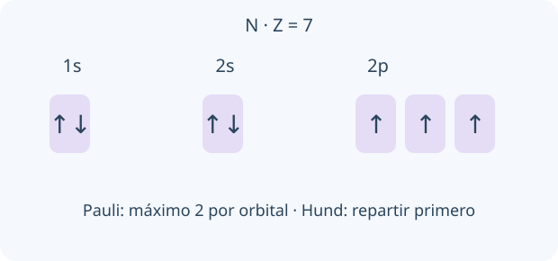

Un orbital no es una órbita dibujada alrededor del núcleo. Describe un estado electrónico y una distribución de probabilidad en el modelo cuántico. Las reglas de ocupación organizan electrones en estados permitidos; flechas y cajas representan esa información de manera esquemática.

Esquema de ocupación del estado fundamental del nitrógeno. Las cajas representan orbitales, no regiones físicas con electrones inmóviles.
Un orbital es una función que describe un estado electrónico, no una órbita planetaria. Los números cuánticos distinguen nivel, subnivel, orientación y espín. Los subniveles s, p y d tienen 1, 3 y 5 orbitales; cada orbital admite hasta dos electrones de espines opuestos por Pauli.
Aufbau orienta el llenado energético del estado fundamental; Hund ocupa orbitales degenerados individualmente con espines paralelos antes de aparearlos. En átomos polielectrónicos intervienen apantallamiento y repulsión; hay excepciones al esquema simple. Al formar cationes de transición se retiran habitualmente electrones ns antes que (n−1)d.
Capacidades: s², p⁶, d¹⁰, f¹⁴
TU TURNO · INTENTÁ RESOLVER ANTES DE MIRAR
N tiene Z = 7: configuración 1s² 2s² 2p³.
Tu desafío: Escribí la configuración y dibujá la ocupación de los tres orbitales 2p respetando Pauli y Hund.
Ver el ejemplo resuelto paso a paso
Los tres electrones 2p se distribuyen ↑ ↑ ↑.
No se emparejan dos en un orbital dejando otro vacío: eso contradice Hund para el estado fundamental.
LECCIÓN 2 / 4 · LEÉ, RESOLVÉ Y COMPROBÁ
Interpretar tendencias y polarización
Empezá desde la idea.
Compará tamaño y carga de los iones antes de explicar polarización. Un catión concentra más su acción eléctrica si es pequeño y tiene carga alta; una nube electrónica grande puede deformarse más fácilmente. La carga formal no describe por sí sola toda la distribución real.
La energía de ionización es el costo de retirar un electrón de una especie gaseosa. Suele aumentar a lo largo de un período y disminuir al bajar en un grupo, con excepciones por subniveles y apareamientos. La afinidad electrónica describe el cambio energético al añadir un electrón; verificá la convención de signo.
Un catión pequeño y con carga alta polariza más; un anión grande es más polarizable. Esa deformación aumenta la contribución covalente en un enlace descrito inicialmente como iónico. Electronegatividad, radio y número de oxidación son conceptos relacionados pero distintos.
Carga alta + radio pequeño del catión → mayor poder polarizante
TU TURNO · INTENTÁ RESOLVER ANTES DE MIRAR
Compará Na⁺ con Al³⁺ frente al mismo anión.
Tu desafío: Elegí el catión de mayor poder polarizante y justificá el efecto sobre el carácter del enlace.
Ver el ejemplo resuelto paso a paso
Al³⁺ tiene mayor densidad de carga.
Polariza más la nube del anión; se espera mayor carácter covalente en su interacción.
LECCIÓN 3 / 4 · LEÉ, RESOLVÉ Y COMPROBÁ
Lewis, resonancia y tipos de enlace
Empezá desde la idea.
Lewis muestra una representación de enlaces y pares electrónicos. Cuando una sola estructura no describe bien la distribución, se usan formas de resonancia. La molécula real no alterna mecánicamente entre dibujos completos: las formas contribuyen a una descripción deslocalizada.
La carga formal asigna la mitad de los electrones compartidos a cada átomo. Sirve para comparar estructuras de Lewis; no equivale a carga parcial real. Resonancia describe una única estructura electrónica deslocalizada mediante varias formas contribuyentes, no moléculas que alternan físicamente entre dibujos.
Un enlace simple tiene componente σ; uno doble añade π y uno triple añade dos π. La hibridización sp, sp² o sp³ es un modelo útil de enlace de valencia. En especies hipervalentes, las etiquetas como sp³d no deben interpretarse como prueba de participación fuerte de orbitales d.
CF = electrones de valencia − no enlazantes − ½ enlazantes
TU TURNO · INTENTÁ RESOLVER ANTES DE MIRAR
En CO₃²⁻ se dibujan tres formas equivalentes con un C=O.
Tu desafío: Dibujá las formas de resonancia, verificá la carga total y explicá qué es equivalente en la especie real.
Ver el ejemplo resuelto paso a paso
La suma de cargas formales es −2 en cada forma.
Los tres enlaces C–O reales son equivalentes por deslocalización; no hay un doble fijo que salta.
LECCIÓN 4 / 4 · LEÉ, RESOLVÉ Y COMPROBÁ
Leer estructuras orgánicas e isomería
Empezá desde la idea.
Una fórmula molecular cuenta átomos, pero no define todas sus conexiones ni disposición. Leé primero el esqueleto y luego los grupos funcionales. Para decidir isomería, comprobá qué cambió realmente y si solo giraste el mismo dibujo.
En fórmulas de esqueleto, cada vértice y extremo sin símbolo representa carbono; los H sobre C se completan según valencia. Alcohol, éter, aldehído, cetona, ácido, éster, amina y amida tienen grupos funcionales característicos y reactividad diferente.
Los isómeros constitucionales comparten fórmula molecular pero difieren en conectividad. Elegí una cadena principal que incluya el grupo prioritario, numerá y ubicá sustituyentes. No confundas cambiar la orientación del dibujo con cambiar conexiones.
C₂H₆O → CH₃CH₂OH o CH₃OCH₃
TU TURNO · INTENTÁ RESOLVER ANTES DE MIRAR
Etanol y dimetil éter tienen C₂H₆O.
Tu desafío: Compará las conexiones y los grupos funcionales para decidir qué tipo de isomería presentan.
Ver el ejemplo resuelto paso a paso
En etanol el O está unido a H y C; en el éter, a dos C.
Cambian grupo funcional y conectividad: son isómeros constitucionales.
02
PREDECÍ · INVESTIGÁ · EXPLICÁ
La química en tus manos.
Cargando la mesa de trabajo…
03
LISTO PARA PONER A PRUEBA TU COMPRENSIÓN
Repasá y encontrá qué volver a estudiar.
Ocho preguntas por unidad, con explicación y enlace a la lección correspondiente. Estos resultados se guardan únicamente en este navegador; no se envían al panel docente.